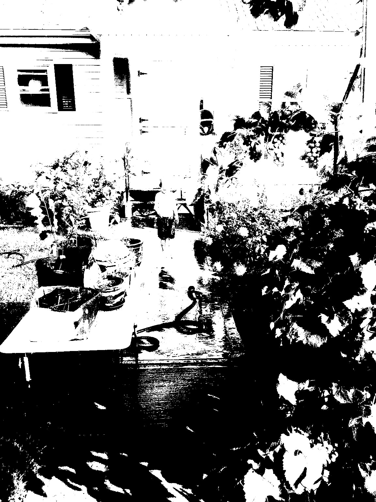
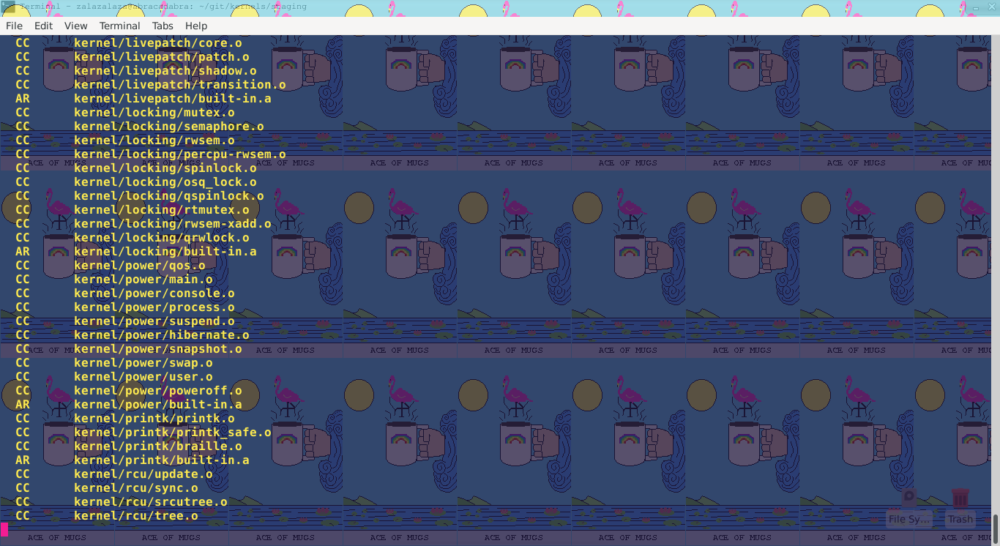
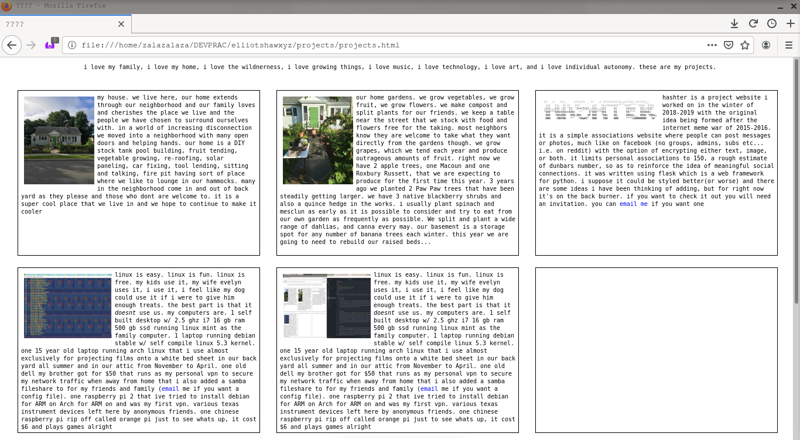
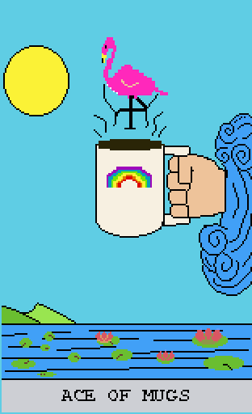
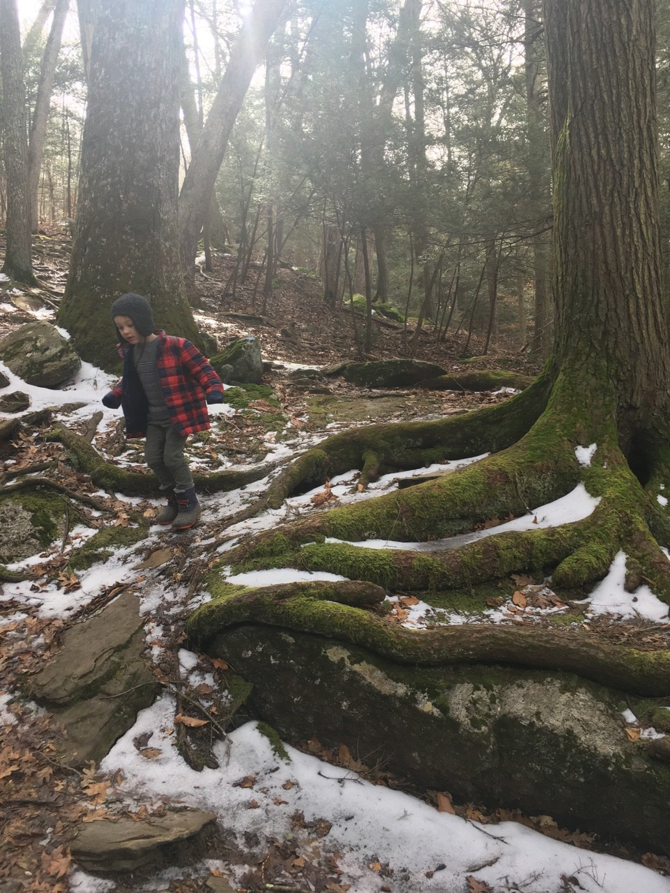

i love my family, i love my home, i love the wildnerness, i love growing things, i love music, i love technology, i love art, and i love individual autonomy. main
 our home. we grow vegetables, we grow fruit, we grow flowers. we make compost and split plants for our friends. we have endless projects ranging from installing a tin ceiling in our bathroom to our up coming patio and stock tank pool installation. we keep a table near the street that we stock with food and flowers free for the taking. most neighbors know they are welcome to take what they want directly from the gardens though. we grow grapes, which we tend each year and produce outrageous amounts of fruit. right now we have 2 apple trees, one Macoun and one Roxbury Russett, that we are expecting to produce for the first time this year. 3 years ago we planted 2 Paw Paw trees that have been steadily getting larger. loooking quite forward to tasting them for the first time. we have 3 native blackberry shrubs and also a quince hedge in the works. i usually plant spinach and mesclun as early as it is possible to consider and try to eat from our own garden as frequently as possible. home projects make up the bulk of our life and also provide the greatest satisfaction
hashter is a project website i worked on in the winter of 2018-2019 with the original idea being formed after the internet meme war of 2015-2016. it is a simple associations website where people can post messages or photos, much like on facebook (no groups, admins, subs etc... i.e. on reddit) with the option of encrypting either text, image, or both. it limits personal associations to 150, a rough estimate of dunbars number, so as to reinforce the idea of meaningful social connections. it was written using flask which is a web framework for python. i suppose it could be styled better(or worse) and there are some ideas i have been thinking of adding, but for right now it's on the back burner. if you want to check it out you will need an invitation. you can email me if you want one
 linux is easy. linux is fun. linux is free. my kids use it, my wife evelyn uses it, i use it, i feel like my dog could use it if i were to feed him enough treats. the best part is that it doesnt use us. our home computer runs linux mint which i find endlessly easier and simpler than any version of windows ive ever used. i have a preference for running debian on my own laptop and have used xfce as my desktop in the past but am just recently switching to openbox as it is more customizable and in the end seems to be capable of producing a more beautiful result. i have one home server that i use to backup any business files i need secured etc... and as a vpn to secure my data when away from my house. I have added a samba fileshare but that seldom gets used. In the future my intention is to build my own streaming service. i like using computers as a tool and deliberately try to keep myself from falling in to any part of the technological zeitgeist. link to my github for dotfiles(linux configuration files), scripts, my solutions to the matasano problems written in python, the code for hashter.org, eventually i plan to work on a simple game written in haskell which i will update there as well.
 this website is the project i am working on right now. I have primarily created as a resource for people to explore at the beginning of a business relationship, but really if anyone is interested enough in my life to look at my website then the attention is appreciated. did you notice it popped right up and is all fast and all that. thats because there is absolutely no javascript. maybe its the luddite in me or maybe i just listen to Bryan Lunduke too much. in any case, there really is something nice about the simplicity of a markup language. click the links, read the italics with emphasis(that's emphasis), understand the failures of javascript did you know that the web as we know it was first conceived at CERN? portal to hell? MAYBE. super fun media resource that continues to transform humanities existence? unquestionably.
 art as in artifact. this that human hands make. find me an uncreative human and ill find you gold at the end of the rainbow. sometimes i make computers sometimes i make other stuff. all that other stuff is here, some of it made with the computers i make. i like pixel art, i like synthesizing with sunvox. i like the tarot. divination? nah, not for me. i couldn't fool myself into the belief in fate or the almighty G_O_D if i wanted to. through art i provide myself with a filter with which to reflect upon my own reflections. the tarot is art made specifically with that intent. so here is art that i love, some by me and some by others. some others are friends of mine and some are not. some of my favorite artists are my good friend Clemens Poole, man of the world, mugician and, master of gift giving
photos from hikes and various wildnernesses around southern New England. Boats, bikes, feet, hands, foraging, stories, destruction of nature and urban exploration. Teaching my kids to be fearless in their curiosity. poke, pry, break and make. when we go out it is usually further away from the ever encroaching grip of civilized society in order to grow more wild and come up with new or old ideas living simply. where is technology without a rock? and where would a rock be without technology? frequent activities include the foraging of mushrooms and berries, trespassing in cool areas, engaging in conversation with the most mysterious of humankind, finding canoes at the ends of beach pebble trails, camping on islands, scraping for clams, block parties, general mirth and revelry, homecomings and goings, birthday parties for kids and family and friends, stories of the destruction of all the places in which i have built my memories and the death of family and friends held in the most high regard. most days i feel like an electricfied caveman armed with a stick and a laser gun and i think thats pretty rad.
{kind=link}
{kind=link}
{kind=link}